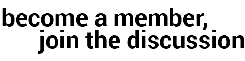

The Commonwealth Club of California is the nation's oldest and largest public affairs forum. We bring over 400 annual event topics ranging across politics, culture, society and economy to more than 20,000 members.
Joining The Commonwealth Club opens up a whole new world of learning opportunities and the chance to interact with not only today's headline makers, but also with fellow highly informed and involved citizens.
We help you untangle timely and emerging issues through a variety of programs and formats, including speeches, debates and discussions. We meet our members where they are: